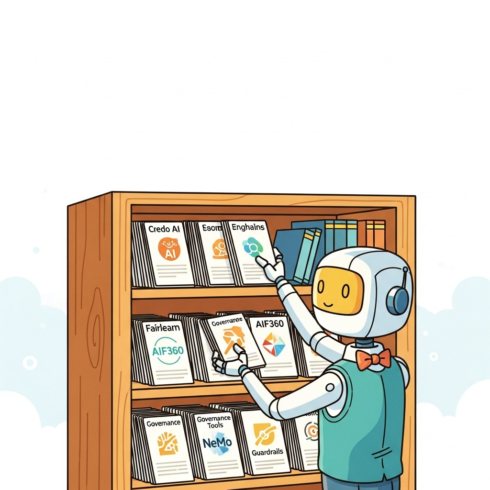

"Responsibility is a habit; tools are the way teams form habits."
Sage, Governance-Tooling AI Agent
Chapters 52 through 55 built the responsible-AI agenda. This chapter is the operational toolkit: Fairlearn, Aequitas, AI Fairness 360, model-card generators, datasheet templates, the C2PA SDK, the carbon-tracking libraries, and the audit frameworks that teams use to convert principles into pipelines.
The responsible-AI ecosystem in 2026 is a layered stack: governance platforms (Credo AI, Holistic AI, watsonx.governance, the hyperscaler bundles) for use-case registries and EU AI Act / NIST AI RMF / ISO 42001 attestations; bias and explainability observatories (Fiddler, Arize Phoenix, Truera, WhyLabs) for production drift and fairness slicing; LLM safety runtimes (Lakera Guard, Arthur Shield, NeMo Guardrails, Bedrock and Azure content-safety APIs) at the prompt and response boundary; open-source libraries (AIF360, Fairlearn, SHAP, Captum, DiCE, Opacus, Flower, C2PA) that compute the metrics platforms surface; canonical bias / toxicity / hallucination benchmarks (BBQ, BOLD, RealToxicityPrompts, TruthfulQA, HarmBench, HELM); purpose-built models (Llama Guard, Granite Guardian, ShieldGemma, Detoxify, Perspective, Gemma-Scope SAEs, OLMo with open data, Claude with Constitutional AI); and the standards, conferences, communities, and newsletters that keep the field current. This chapter is the practical reference, organized by what you would install, deploy, evaluate against, and read.
Chapter Overview
Part XI covered bias, regulation, watermarking, transparency, and sustainability. This chapter consolidates the responsible-AI toolchain: governance suites (Credo AI, Holistic AI, watsonx.governance), bias and explainability observatories (Fiddler, Arize Phoenix, Truera, WhyLabs), LLM safety runtimes (Lakera Guard, Arthur Shield, NeMo Guardrails), fairness toolkits (AIF360, Fairlearn, Aequitas), explainability libraries (SHAP, LIME, Captum, TransformerLens, BertViz, Inseq), red-team suites (PyRIT, garak), the LLM bias benchmarks (BBQ, BOLD, StereoSet, CrowS-Pairs, WinoBias), the safety classifiers and detectors, and the foundational papers, standards, and venues (FAccT, AIES, NIST AI RMF, EU AI Act, ISO 42001) that anchor the field.
Responsible-AI tooling crossed from "academic prototype" to "procurement-ready vendor" between 2023 and 2026. This chapter is the index of what stuck.
- Compare governance suites (Credo AI, Holistic AI, watsonx.governance) for an enterprise AI program.
- Wire bias and explainability observatories (Fiddler, Arize Phoenix, Truera, WhyLabs) into a production stack.
- Apply fairness toolkits (AIF360, Fairlearn, Aequitas) to a tabular or LLM use case.
- Use explainability libraries (SHAP, LIME, Captum, TransformerLens, BertViz, Inseq) for the right granularity.
- Evaluate a model on bias benchmarks (BBQ, BOLD, StereoSet, CrowS-Pairs, WinoBias).
- Track the standards (NIST AI RMF, EU AI Act, ISO 42001) and venues (FAccT, AIES) that shape responsible-AI practice.
Sections in This Chapter
Prerequisites
- Bias and fairness from Chapter 52
- Regulation from Chapter 53
- Transparency disclosures from Chapter 54 (transparency)
- 56.1 Platforms Governance suites (Credo AI, Holistic AI, watsonx.governance), bias and explainability observatories (Fiddler, Arize Phoenix, Truera, WhyLabs), LLM safety runtimes (Lakera Guard, Arthur Shield, NeMo Guardrails), and open-source / standards-aligned stacks for the EU AI Act and NIST AI RMF.
- 56.2 Libraries and Frameworks Fairness toolkits (AIF360, Fairlearn, Aequitas), explainability libraries (SHAP, LIME, Captum, TransformerLens, BertViz, Inseq), counterfactual generators (DiCE, Alibi), LLM red-team suites (PyRIT, garak), watermarking (SynthID-Text, Kirchenbauer), provenance (C2PA), and differential privacy (Opacus, Flower).
- 56.3 Datasets and Benchmarks LLM bias benchmarks (BBQ, BOLD, StereoSet, CrowS-Pairs, WinoBias), tabular fairness datasets (Adult, COMPAS, Folktables), toxicity benchmarks (RealToxicityPrompts, ToxiGen, Civil Comments, HateCheck), truthfulness (TruthfulQA, FActScore, HaluEval), privacy attacks, and aggregated suites (HELM, AIR-Bench, HarmBench).
- 56.4 Models Safety classifiers (Llama Guard, Granite Guardian, ShieldGemma, OpenAI Moderation), bias and toxicity detectors (Perspective, Detoxify, HateBERT, ToxiGen-RoBERTa), watermark and AI-content detectors (SynthID, Binoculars), aligned base models (Claude with Constitutional AI, OLMo with open data), and interpretability releases (Gemma-Scope, Pythia, SAE Lens).
- 56.5 External Reading and Communities Foundational papers (Gender Shades, Stochastic Parrots, Constitutional AI, Datasheets), conferences (FAccT, AIES), standards (NIST AI RMF, EU AI Act, ISO 42001, Council of Europe AI Convention), organizations (PAI, DAIR, AI Now, METR), and the weekly newsletters and communities that keep practitioners current.
What's Next?
This chapter begins with Section 56.1: Platforms. Each section builds on the previous one, so we recommend reading them in order.